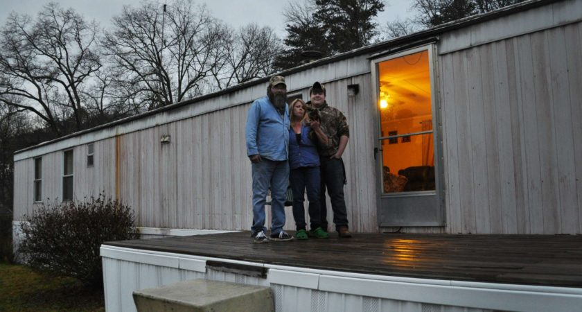

Once I was finally retired from MAJestic, and I was able to do whatever I wanted. As such, I made a cognitive appraisal of my situation. I performed what they call in the industry, a situation analysis.
I discovered that my life as a post-MAJestic operative in the United States was not going to be a pleasant retirement. I discovered that I would forever be monitored, watched and observed. I discovered that those watching me were themselves, NOT part of MAJestic. But, rather outsiders who were doing so for other reasons. And they, not knowing who I was or what I was capable of, could cause all sorts of uncomfortable situations.
Uncomfortable for all of us.
Indeed, I would have to constantly “look over my shoulder” and follow all kinds of odd reporting rules, often changing without notice. Rules that were politically driven, and not structurally driven. I would have to live the life as a third class citizen, and float under the poverty level. My life would be solitary, poor, meaningless and difficult.
Yuck!
Therefore, I did what was my only option. I left the United States and moved overseas. For after all, that is the only recourse that was available for me.
Quick Review – Why I was incarcerated.
This subject is covered in great length elsewhere. But to summarize, it’s all quite simple, really.
The United States has many top secret programs. Those programs where the agents might be considered dangerous or might need to be monitored are put into a monitoring program. You can think about every “Top Secret” themed Hollywood movie you have ever seen. Would you want those agents walking around freely once they exited their respective programs?
- Jason Bourne meets the Antifa.
- James Bond 007 has an encounter with the IRS.
- Jesse Eisenberg (American Ultra) gets pulled over for “special screening” by the TSA.
- Ripley+ decides to move and live in New York City.
- Dren (the creature from Splice) joins match.com.
In the United States, there is only one legal long-term monitoring program. (The parole system is a short-term monitoring program.) That is the sex offender registry.
Thus, all potentially dangerous agents, as well as all (core two implanted) MAJestic members, are retired as sex offenders so that they can be monitored. This is the way it is done. Don’t get all hot and bothered about it. The decision to do so was concocted sometime in the 1990’s.

Yet, since the programs that the agents were in were so secret, no one can be told what they did or what their roles were. No one knows.
It’s secret right?
The reader should be quite versed in what a “cover story” is. After all, it is a Hollywood staple. In the movie “American Ultra“, the cover story was rabid crazed monkeys forcing a quarantine on the town. And in real life, the cover story for the retirement of MAJestic (so-called) dangerous agents is “sex offender”.
That’s the way it is done.
No no one is told anything. At best there is a note on their binder to contact some phone number in Washington D.C. There they would have a very blank vanilla instruction sheet of what to do and what to watch out for. There would be no information on their capabilities, their training, their missions, or anything like that. Those who would be responsible for “retiring them” would be in the black as to their true and real purposes.
So they are just labeled a “sex offender” and monitored. And no one is the wiser. To everyone else, the person is just an evil sick and twisted sex felon. Yuck. No one even wants to go near them. No one knows the TRUE and REAL reason why they are being monitored.
No one.

Personally, I really don’t understand why I, personally should be monitored. I’m not a covert assassin or military killer. I’m not a radical. And while it is possible for some elements of MK Ultra related training in my background, I really highly doubt that. I’d know, after all.
Truthfully, at worst, I think that I am more like an improved Ripley +.
I am not anything even approaching a 007; a Jason Bourne, or a member of the Mission Impossible Action force. LOL. Truthfully, I’m not someone that is going to attack people indiscriminately or shoot up a High School.
At worst, there might be some kind of transitional reality-shifting around me. Maybe your socks might change color. Maybe your 4L car engine turns into a 3.6L engine. Maybe the Beatles song “I want to hold your hand” becomes “I wanna hold your sand.” Maybe the wine color of the color chartreuse turns into a yellow-lime color.
No biggie.
Yeah. I know it sounds so terrible. Walking around being modified by Lord-knows-what, for who-knows-why, but that is no reason to have someone monitored until they die. Is it?
Remember Hollywood is fiction.
Please keep that in mind. It is our fears that cause us to box ourselves inside this reality of ours. The real deal is something else all together. Still… I just don’t understand why I personally need to be monitored. Really, I’m not going to do anything, nor have I ever done anything.
Anyways…
This is my story regarding this phase in my adventure .
When I exited prison, I was alone.
My parents were dead. I had few friends and relatives remaining, and none of them wanted to endure the reporting requirements to the local police for housing me . I cannot say that I blamed them. No one wants to let the local police have any of their personal information; whether it was bank, e-mail or automotive unless there was a compelling reason to do so. I became a “tar baby” , and no one wanted to help me.
I had few options .
We’ve all probably had moments in our life when things got so tough, we just wanted to throw our hands up and quit. But it’s precisely in those times when have to grit our teeth and keeping going on. Quitting is the easy thing to do. It’s the keep-going-on that’s hard. But it’s taking the hard way that makes you a man.
So you swallow hard. You look at the bright side of things, what ever you can find, and plow forward. When people treat you poorly and things don’t go you’re way, you just let them roll off your shoulders.
My New Life in America
Characteristics of my new life as third class citizen of America;
- Inability to obtain “white collar” or professional employment. Employment in doing the only thing that I knew how to do. I was stuck doing unskilled labor or being retrained to some semi-skilled non-professional occupation.
- Inability to live where I wanted to. I had to live in “sex offender free” zones. This has become problematic, as local level government has over the years, been intentionally fencing sex offenders out of their jurisdictions.
- Inability to leave the state without permission.
- Inability to sleep at a girlfriends house, friend’s house, or hotel without notifying the police.
- Inability to visit city, state and federal parks.
- Must be aware of all sex offender laws in all jurisdictions. As they change and are revised, the offender is not notified, it is up to them to be aware of changes in the law. Ignorance is not acceptable.
- Inability to get medical treatment without notification that I was a sex offender.
- Reporting requirements and registration. Depending on my locale, I might need to report every year, or every month. Some areas require that I wear a GPS tracking brace, and ask permission to own a phone.
- Inability to obtain any kind of secondary education without notification and an interview by the police..
- Changing of address needed government approval.
- Changing of phone number needed government approval.
- Purchase or sale of a vehicle needed government approval and notification.
- Driver license requiring special identification as a “sex offender”.
- Changing of Internet registration data needed to be reported.
- The slightest violation in any reporting aspect would result in a felony. Such as buying a new cell phone. Downloading a social media APP, or walking on the sidewalk outside of a playground.
- Being subject to neighborhood notification. Depending on location, this might mean signs being posted, police knocking door to door and telling people about me, or my picture being displayed on local television every couple of weeks.
- Internet database access of my criminal history.
- Periodic reporting every few months to the local police station.
- And as of 2017, a big stamp on my passport (thanks to Tom Cotton, Senator from Arkansas) that says that I am a “Sexual Predator against children”. Making it difficult for Sex Offenders to even leave the United States.
Of course, I could accept these limitations. Others have. They generally move in with friends or relatives, or perhaps a wife or a girlfriend and start their life anew. However, that was not in my cards.
"For sex offenders, our mistake is forever available to the world to see. There is no redemption, no forgiveness. ... There is never a chance for a fresh start. You are finished. I wish I was executed because my life is basically over." - Townhall.com
You see, but…
I had few relatives.
I had no relations remaining in the United States. When I exited prison, I discovered that my “friends” took hold of all my belongings and sold them off to flea markets, and book dealerships. All that I could find were some old photos and underwear getting moldy in the basement of a garage behind one of my “friends” houses.
Now, truthfully, as all readers can expect that there are various “work arounds” that a person can do in order to minimize the effect of these restrictions. For instance, I could find a cheap house far away from a city or town, and keep to myself. I could live in a shack off at the edge of a state forest, or cemetery. I did not need to be connected to the Internet, cable, or telephone. Or, alternatively, I could use someone else’s service. I could live a quiet and retired life far away from others, and be left alone quietly to die.
Ok.
Well, in a way I did that. You cannot get any further away from you fellow Americans than to move completely around the globe. And so that is exactly what I did. I decided to leave the USA. If the government, and my fellow citizens do not want me around, I am not stupid. I let them have their way. I gave them what they wanted. I gave them what they legislated towards.
I did what they legislated. I am now far, far outside of their life.
Sorry you seem so butt-hurt about the IRS and the USA, etc. Obviously you have a seething rage and hatred for the USA for whatever (unexplained) reason . That’s OK. Stay in China and hate us all you want. Works for me. -A quote from a jack-ass who was trolling me.
A Felon who was once a Professional
This is the story of my post-prison life and how I tried (unsuccessfully) to reintegrate into American society . This was before I decided to leave the USA. What I describe here is well known to anyone who once was a white-collar professional and who entered the prison system.
It is set up that way.
Lower rung elements of society won’t experience the same kinds of hurtles. That is because they have a large and extended support network, for the most part. Some, upon exiting prison would find construction work with friends, or start a tree stump removal business. Others, with skills in the “trades” would pick up where they left off doing plumbing, or electrician work. (The possessed so-called “trade skills” that enabled them to be self-employed.)
But I could do none of that.

As a “professional” all “professional” work was closed and denied to me. (Professionals include doctors, lawyers, scientists, engineers. All require professional registration at the state level, or barring that, employment with a company that is a registered entity.) All of it. This is partly due to design; no registration agency would touch me. But it is partially also due to the culture of industry ; no one would hire me.
My life was over in the United States. By law, I have now become a third class citizen with all sorts of restrictions on my behavior, where I lived, how I acted, where I worked and what I could do. Not to mention what tools I could use. For instance, how can someone work in a office and NOT have access to a computer, a telephone, or a printer? No one is going to hire you with those restrictions. Why not simply ban wearing shoes?
I could have accepted it.
There is more than one way to do something
However, I did not have to. I had other options. I had skills. I had friends. I had abilities. My dear reader, when I was selected for this W(U)-SAP out of AOCS while at NAS NASC Pensacola and then began my mission parameters at NWS China Lake it was because I had skills and ability.
These skills; these abilities, did not suddenly vaporize and disappear when I was incarcerated and retired. I still had them. I just could not use them…
…in the United States.
Logic dictated that I had a choice. I could stay in the USA and be monitored as a third class person, live on the dole, and subsist in a life of loneliness. Or I could leave and set up a new life elsewhere. I could leave the USA. Hum… What to do? What to do?
So I left.
Prep while in Prison
The entire time when I was in prison, I studied. I learned how to write and read Chinese. It was pretty darn difficult to do. Let me tell you. But I was able to obtain some study guides and spend all of my free time learning. I practiced and practiced.
My sister sent me a small stipend to live off of. Instead of spending all of it at the commissary, I saved most of it up. So what when I would be released I could buy a plane ticket and leave.
Of course, while in prison, everyone thought I was bonkers. They laughed at me. They made fun of me.They mocked me. They played tricks on me and made my life difficult. This was true with my fellow inmates, as well as a number of guards. They would come up to my cell, and ask “Hey Professor! How’s that Chinese coming? You gonna dig your way out of here eh?”
But I was used to it.
All the time when I was in High School and working in the coal mines, I was constantly picked on and being made fun of. They made fun of my dream to become a rocket scientist. They picked on me and constantly berated me telling me that I would “never amount to anything”. Though they didn’t say it that way. They said that I “wouldn’t amount to jack shit“.
It just caused me to work harder. I took it. I gritted my teeth and shoveled harder. Some times I would say “Fuck you”, and pick up the pick axe and throw my weight into it.
To qualify as a Naval Aviator, I had to meet physical requirements as well. My Aerospace Engineering degree wasn’t good enough. I had to be a perfect physical specimen. So every day I exercised. I did two hundred pushups at a time, and the same in sit-ups, not to mention running five miles every day before my classes at the university.
So, here I was. I was well experienced in dealing with ridicule by assholes. I studied. I saved, and I planned. When the time came for me to be released from prison, I was ready.
This would never happen to me
This is the story that I lived and experienced. There are many who might say “that would never happen to me because…”. Of course, these fools abound. (yes; if you the reader believes that it can never happen to you – are a fool. It can happen to anyone.)
All it takes is to be accused…
The truth is that no one really knows what is in store for them unless they live that life themselves.
You could be smart, and obey the law. You could do everything right and perfectly, and never get into trouble. You could be a virtual saint in real life, helping poor people and tending to the needy, but it won’t matter. Someone can crash into your life and make an accusation, and turn your life upside down.
All it takes is one person to make an accusation, and their army of friends to “jump on the bandwagon” and accuse you in unison. The media picks up on it and goes after your jugular. Death threats become common. People drive slowly past your house. Sugar is poured in your gas tank. Someone tries to set your house on fire. Your pets show up missing…
You think I don’t know about this?
In fact, one of the most common stories that I would hear in prison was how no one expected that they would go to prison (with the exception of black urban youth, they seemed to view it more or less like a rite of passage.). Even people who were involved in the most horrible or obvious criminal activities all thought that they were “smarter” than the law or legal system.
I once shared a cell with a man who had five DWI’s and he just could not reconcile why he was in prison. He said he just did nothing wrong, he just broke the law. WTF?
The reader should learn from my story.
YOU can go to prison easily…
In America today, going to prison can happen to anyone . Yes, and that means YOU. Yes, you! All that needs to occur is for someone to accuse you of violating the law. It doesn’t need to be proven. That’s Perry Mason nonsense.
Today, it’s a new ballgame. Once you are accused, you risk having your entire life destroyed.
Some people manage to survive the accusation, and then try to limp along on their lives. They are hurting, but they still have their house, their car, and their families. They still have a job, a role, a life. Others, like myself, are not so fortunate.
You could be hiding in your house and never go out at all, and the legal authorities can break down the door and accuse you of some crime. The DA could press for a huge horrible sentence and offer you a much lighter sentence in exchange for a guilty plea. Which is, in fact, how nearly 90% of all criminal cases in the United States are resolved.
So, yeah. You could agree to their terms, and then the Judge could ignore your plea agreement . (Like what happened in my case.) Learn from my experience.
If someone wants you to go to prison, you will go. That’s the way it works in the USA.
An emotional time
Anyways, here is what happened after I completed my prison sentence. It is difficult to describe my complex emotions at the time. I just cannot.
But I will try. To begin, I will quote from one of my favorite authors a segment that well describes my feelings and emotions at the time. I felt betrayed, and alone.
Betrayed, and alone.
“The Fog Horn blew.
And the monster answered.
A cry came across a million years of water and mist. A cry so anguished and alone it shuddered in my head and my body. The monster cried out at the tower. The Fog Horn blew. The monster roared again. The Fog Horn blew. The monster opened its great toothed mouth and the sound that came from it was the sound of the Fog Horn itself. Lonely and vast and far away. The sound of isolation, a viewless sea, a cold night, apartness. That was the sound.
"Now," whispered McDunn, "do you know why it comes here?"
I nodded.
"All year long, Johnny, that poor monster there lying far out, a thousand miles at sea, and twenty miles deep maybe, biding its time, perhaps a million years old, this one creature. Think of it, waiting a million years; could you wait that long? Maybe it's the last of its kind. I sort of think that's true. Anyway, here come men on land and build this lighthouse, five years ago. And set up their Fog Horn and sound it and sound it out towards the place where you bury yourself in sleep and sea memories of a world where there were thousands like yourself, but now you're alone, all alone in a world that's not made for you, a world where you have to hide.
"But the sound of the Fog Horn comes and goes, comes and goes, and you stir from the muddy bottom of the Deeps, and your eyes open like the lenses of two-foot cameras and you move, slow, slow, for you have the ocean sea on your shoulders, heavy. But that Fog Horn comes through a thousand miles of water, faint and familiar, and the furnace in your belly stokes up, and you begin to rise, slow, slow. You feed yourself on minnows, on rivers of jellyfish, and you rise slow through the autumn months, through September when the fogs started, through October with more fog and the horn still calling you on, and then, late in November, after pressurizing yourself day by day, a few feet higher every hour, you are near the surface and still alive. You've got to go slow; if you surfaced all at once you'd explode. So it takes you all of three months to surface, and then a number of days to swim through the cold waters to the lighthouse. And there you are, out there, in the night, Johnny, the biggest damned monster in creation. And here's the lighthouse calling to you, with a long neck like your neck sticking way up out of the water, and a body like your body, and most important of all, a voice like your voice. Do you understand now, Johnny, do you understand?"
The Fog Horn blew.
The monster answered.
I saw it all, I knew it all-the million years of waiting alone, for someone to come back who never came back. The million years of isolation at the bottom of the sea, the insanity of time there, while the skies cleared of reptile-birds, the swamps fried on the continental lands, the sloths and sabre-tooths had there day and sank in tar pits, and men ran like white ants upon the hills.
The Fog Horn Blew.
"Last year," said McDunn, "that creature swam round and round, round and round, all night. Not coming to near, puzzled, I'd say. Afraid, maybe. And a bit angry after coming all this way. But the next day, unexpectedly, the fog lifted, the sun came out fresh, the sky was as blue as a painting. And the monster swam off away from the heat and the silence and didn't come back. I suppose it's been brooding on it for a year now, thinking it over from every which way."
The monster was only a hundred yards off now, it and the Fog Horn crying at each other. As the lights hit them, the monster's eyes were fire and ice, fire and ice.
"That's life for you," said McDunn. "Someone always waiting for someone who never comes home. Always someone loving something more than that thing loves them. And after a while you want to destroy whatever that thing is, so it can hurt you no more."
-Ray Bradbury. The Foghorn.

Finding a place to land
Leaving prison is pretty bitter sweet. You are damaged. And while, you are made stronger, more efficient; a “better” person in many ways, the full realization and manifestation would take years.
You are damaged.
Years of your life has been put on “hold”. What ever education that you had picked up in prison had no applicable application outside of the prison walls. It’s as if your educational background has been obliterated. You have no money. No recent “job history”. No vehicle, phone, furniture, and clothing worth mentioning. You are reborn, but not as a young infant. No, that is for most felons, but not for me as a “Sex Offender”.
You were reborn as an old man with a big sign that said “stay away!”.
Family
“Don’t hold together what must fall apart. The familiar life crumbles so the new life can begin.”
— Bryant McGill
My sister opined that posters would have to be put up in the town where she lived advertising that a sex offender lived with her . This would not be good because she had a life and a business in that town, and any association with me was potentially hazardous to their family business. After all, she reasoned; who would shop in a store that supported a “sex offender”?
This was especially true in small rural communities and small cities. The fact was that, she believed, that I would have to advertise my presence to the community. That advertising would severely destroy her small town business that she had worked so hard to create.
My brother also expressed concern that there were families with children in his apartment building. I was not permitted to live near families with children. Or near parks, playgrounds, schools , public spaces, libraries, post offices, and other locations. Even a park bench would violate my parole if I lived within proximity to it. He owned a nice collection of firearms, kept pistols in his trucks, and maintained concealed carry. If I was anywhere near him, I could be arrested.
A felon cannot be in the physical proximity of a firearm. Even if I rode in a car, and I had no idea that there was an unloaded gun in the trunk, I could be arrested for possession of a firearm. A second offense and a gun charge at that. I would be looking at 15+ years’ incarceration. (Word to the wise, I knew a guy doing time who was looking at an additional 15 years simply because he was hitchhiking. The guy who picked him up was an off duty cop. He was arrested by the guy who picked him up because the off-duty police officer had a holstered pistol.)
Both relatives did not want to help me in any way. There was no choice in the matter. I was on my own.
I was on my own .
Be a resilient man. For a resilient man understands that the only thing he can control is himself. Only he can change his circumstances and only he can control how he reacts to adversity. Circumstances don’t dictate your life-you dictate your life. The resilient man waits for no one to solve his problems; he is always actively trying to solve them himself.
Half-way Houses
“Those who corrupt the public mind are just as evil as those who steal from the public purse.”
–Adlai Stevenson, 23rd Vice President of the United States
With no money and no friends, the only recourse for me would be to enter some kind of “half-way” house arrangement. These organizations are designed to help felons transition back into society. The felon is given a place to sleep (while paying rent), some food (while paying for the meals), and help locating work. It’s a great way to integrate oneself back into society. However, there is one problem.
Most “half way” houses did not accept sex offenders .
There is evidence that some half-way houses that do actually accept sex offenders require that a large bond be posted. If the sex offender violates their parole in any way they lose their bonded money. On the surface this sounds like a good idea, but it is actually just a money-making scheme.
There is a high rate of parole violators partly due to the fact it is very easy to violate parole; for sex offender, the mere idea that they could reoffend because they sat in a car with someone else who had a cell phone was a real threat.
Other violations include, having a phone number, having a facebook account, applying for a job using a email account, going to a PG rated movie, watching television, having a MP3 player, going to a restaurant that served beer, or using the computer.
I ask the reader; could they live in America under these parole stipulations?
Is the reader actually willing to risk parole by watching a Disney or Pixar movie? How about riding in a car with a friend who happens to have a cell phone? Are you, dear reader able to insist that all of your friends leave their cellphones at home when they are next to you? What about going to a movie rental place? What if you pick up a DVD box that is rated as PG? Are you and your friend ready to accept prison incarceration for that little mistake?
Most, but not all. Yet finding one, with an open bed was problematic, if not impossible. So, actually, once I exited prison my troubles were only just starting. I had to have an address and a place to live.
Not only to start my life over again, but also to meet the reporting requirements for a sex offender.
If I could not obtain a place to live, work, and meet their reporting requirements and fees (!) I could be re-imprisoned for failure to meet the terms of my release. I was in-between a rock and a hard place.
Low Income Housing
“Our carceral state banishes American citizens to a gray wasteland far beyond the promises and protections the government grants its other citizens… When the doors finally close and one finds oneself facing banishment to the carceral state—the years, the walls, the rules, the guards, the inmates…the incarcerated begins to adjust to the fact that he or she is, indeed, a prisoner. New social ties are cultivated. New rules must be understood.”
– Ta-Nehisi Coates, The Atlantic
I looked at low income housing .
That was an alternative, with the fact that I had no income. Low income housing, also known as “Section 8 housing” is a special program in the United States that provides subsidized housing for people with low to no income.
There were different sub-programs involved, and I could apply for each program individually. All in all, it is a good program, except that it is abused by a certain percentage of the population, often mismanaged, and tended to have a large percentage of mentally ill inhabitants in it.
As will all segments of society, at the bottom you will find crimes; [1] often of a most petty nature, [2] poor manners, and a [3] general disregard for others. But as transitory housing, it was well worth the investigative effort that I could apply to it.
I knew that it would be a difficult thing to attempt to do. The waiting periods were very long (typically lasting years), as there were many people trying to enter these programs. But I had to give it a try and see if I could at least get on a waiting list.
I went to many interviews with this goal in mind. In all cases they (The management of these housing organizations.) dealt with an enormous State level and Federal level bureaucracies. As such, I had to fill out many forms, and consent to all kinds of background checks. But the bottom line was always the same.
None of them would accept sex offenders.
This was usually due to the facts and requirements of the federal and state agencies; they routinely denied people with this kind of criminal history, and also due to the whims and choices of those whom interviewed me ; they often just simply chose not to help me.
I would say that all of the state run and state funded organizations refused to give me anything other than a thank you, but no. Many times the people wouldn’t even bother to shake my hands.
The religious ones were different. But they too often received state and federal funds, and they also had their hands tied. The religious organizations were there to help. They were doing this work for spiritual purposes and actually believed in helping people. While the state run organizations were just getting a paycheck. It was just a job to them.
Those whom made the hiring decisions failed to hire me. It was their choice. It was made by their own personalities and how they accepted or did not accept my application.
One of the companies where I applied was a service center that provided a live person on the phone to handle customer complaints and questions. These firms typically hired felons because they offered terrible hours and were easy to monitor and evaluate performance on because the employee was “chained” or “tethered” (figuratively speaking) to a computer that they could monitor and appraise.
The woman who interviewed me, after completing the interview and passing the test, plainly told me directly; “I will not hire anyone who is a sex offender. Period.”
She then gave me this big smirk on her huge black (African-American face) and said in the most sarcastic manner possible “Oh, but I DO hope that you can find work somewhere else…”.
Religious Charities
I looked into religious charities that would house the unemployed, sick, or mentally disabled. (By the way, for the record, I am a big fan of religious charities. If the reader wants to do good, I would suggest donating some time or money to their religious charity of choice.) But most also would not accept sex offenders.
It turned out, as one manager told me, that in order for the ministry to accept government and state grants to operate they had to abide by the requirement that they would not take sex offenders. So to operate and house the homeless they must agree not to house sex offenders. It was a federal requirement.
The government created these policies, and yet had no program to deal with those that they put into the programs. What did they think we would do? Without being able to live, get work, or be able to perform simple tasks we became a liability and a burden to the community.
But that did not matter to those who buy votes to get reelected. They only wanted to stay in office. They would offer “feel good legislation” in order to buy votes and to stay in their comfortable offices.
The term “ feel-good" legislation” refers to indiscriminate and/or unenforceable bans, as well as draconian sanctions applied to behavior that is already illegal. They consist of laws that have no basis on existing crime, but rather on the emotional needs of the population. It creates a general disrespect for law and reduces compliance, while aggravating (or at best, failing to improve) the problems these laws were supposedly enacted to solve.
Friends
I looked into old friends, my former business connections, distant relatives, and even friends of friends. In each case the answer was no. I cannot blame them, but I actually did need to be able to have a place to sleep, and one that I could register with the police with. It was a problem that I had to resolve and to do so quickly.
A need to act quickly
I had three days to take action. (It was not my choice, but rather the time limit imposed on me by law .) Three. I looked at my resources. I had on the clothes on my back. I had $100 in cash and a check from the prison of all the money that I had saved up. I had no relatives or friends remaining in the United States who were willing to help me.
However, I did have resources outside of the United States.
You see, prior to my arrest, I had been doing a substantial amount of international business. As such, I had friends, job and employment contacts , and even (some) savings in a bank (untouchable by the United States government ).
It was a great coincidence that I had the nudge to put aside some money outside of the USA. All I had to do was reestablish contact with my external resources and build a new life elsewhere .
I tell you the truth, if I could have made a new life back inside the United States I would of. But even if I could, it would be a paltry one at that. At best, I was looking at laborer work (physical labor with a shovel or moving dolly) or janitorial work in my late 50’s for minimum wage. I was looking at bike-riding instead of a car, and a small shabby low-rent room in a boarding house instead of an apartment (a owned home was out of the question). (These boarding houses, with rent of $100/week were often quite shabby affairs, with neat but dusty decrepit surroundings, unadorned light bulb hanging down from the ceiling with a lone wire, and stained curtains on the wall.) It was not a nice promising new life that awaited me.
It would be a lonely life. A life without relationships; where friends and girl-friends were difficult to make and keep. (All a girl would have to do was look me up on Google .) It would be a life where I would be scrutinized for everything that I would do, how I would do it, and why. My life would be a prison disguised as “freedom”. (Which was by intentional design, that had somehow due to political manipulation, morphed into something actually quite unreasonable and difficult.)
Path of least resistance
So, I took the only opening that was available to me at the time . I registered with the police as I was compelled, by law, to do. I then tried to collect my identification, but they were all discarded or mislaid, so I had to reapply for everything.
Eventually I was able to obtain my identification papers. I had to reapply for everything from scratch. [1] I began with fingerprints, and then using it to [2] reapply for a driver’s license. Then using that, [3] I applied for a Post Office box. Then with that, [4] I applied for a replacement passport. With the replacement passport, I was able to [5] apply for a visa to China, and [6] buy a plane ticket.
You don’t think that I just got out of prison and boarded a plane, did you?
I tried to find work and housing, but it was impossible to do so. I couldn’t even open up a bank account because during my arrest, everything fell apart. For instance, the auto-deduction bill payment system bankrupted my account , and I found that I owed them thousands of dollars before they closed my account .
Heck, when I got out of prison, I discovered that it was impossible for me to open up a bank account unless I paid the balance due plus interest. I could have bought a car with the amount they wanted.
At the Airport
I arrived at the airport, not expecting any hassles.
I followed the procedures that I had done a thousand times before. Only this time, I was no longer a first-class American citizen. I was a third-class felon. When I went through TSA, I discovered just what it was like to be a caged animal.
They took me aside to another part of the airport, and stripped me naked. They conducted a cavity search. They placed all my belongings on this enormous table and photographed every item. They went through my wallet, my bags, and my papers. In going through all my belongings and wallet they asked me why I was carrying the few dollars that I had on me, and why I didn’t have a cell phone. They asked me where I was going and why. They scanned all the music on my MP3.
I wonder if the Gestapo was ever so thorough in Nazi Germany? Well, I ask the reader this. Think about it. Were they?
I went through immigration, and then boarded the plane for a new future. It was a future of unknown expectations, and unexpected lifestyle. But I was not afraid. Anything was better than the life in a hard labor prison in the Southern United States.
The often quoted phrase “It’s all good!” took on a new level of meaning once I stepped out of prison and left the shores of the USA.
The reader needs to recognize that talented people retain their talent regardless of the situations that they encounter. As I experienced such a deluge of “bad luck”, one would expect me to end up on the street begging. However, that is not what happened. How? The answer is simple, if a person is exceptional, and is chosen by MAJestic; their core being will stay intact even after they left the organization.
Such is my story.
The airline apparently “lost” all of my luggage. Imagine that! I wonder if some “good Samaritan” decided to accidentally misplace my belongings once it was identified that I was a “sex offender”.
As a result, my connecting flight to NYC where I would board a Chinese airline had to be without luggage.
Lord only knows what happened to the overall dispensation of my bags. They are probably lost somewhere in Newark, forever collecting dust and slowly rotting away.
So I arrived wearing black medical scrubs (my preferred choice of attire when flying internationally for long trips where one has to go through multiple American TSA checkpoints ), a pair of black house slippers and socks, and one pair of underwear. I had my backpack with a handful of documents, a toothbrush, and a towel. And less than one hundred dollars. That was it.
I had nothing, no hope and no life in the United States.
But I did have one elsewhere. Knowing that gave me advantage. So I made a few phone calls, and renewed my contacts. I reconnected with my outside resources and boarded a flight overseas .
Final Egress from the USA
Exiting the airport in the United States, and boarding the Chinese airlines to China was like a breath of fresh air.
No problem. I might be a pariah in the United States, but outside of the country I was just an average man. I had served my time, and even got a certificate of rehabilitation out of it. I had no parole officer to report to, or any limitations on where I could live. I was free, as long as I left the country. Though, I am sure that there is some bureaucrat that wants to change even that.
I might have been a felon, but I was still a citizen (though a third class one at that), and I possessed the basic rights as a citizen and that meant that I possessed an American passport . The fight out of the United States was the turning point in my life up to that time, and after I left, everything came together quickly.
It was a purge of all my belongings and a sum totality of my past.
After being treated so harshly at the hard-labor prison camp in the hot Arkansas wastes, followed by being an “untouchable” being barked at by TSA and militarized police, I entered a new world.
It was a much softer world. It was a world where smart people were valued. It was a world where knowledge had merit and your worth was determined by your ability. It was a polite world.
I immediately felt at home.
In hindsight, I should have obtained a second passport prior to my incarceration. Let that be a lesson to the reader; always have a second passport. Do not count only on having an American passport.
American passports make opening a foreign bank account nearly impossible, add all kinds of reporting and legal difficulties, and adds additional fees to everything you do, just because you are an “American”.
More about the problems of being an American in the modern global economy, please read THIS ,and THIS , and (probably the best advice) THIS , and THIS,and THIS .
I would also advise the reader to keep all passports and personal papers in a place outside of their home and vehicle. Maybe a safety-deposit box, or with a very trusted friend.
When the USA government wishes to “investigate” you, they tend to seize everything. They will freeze and take your bank accounts, and all kinds of personal papers, computer and cell phones.
Don’t be caught as I was, all bank accounts frozen, all documents seized (and then lost by the authorities), all records taken, and with all friends inclined to avoid you.
The airline lost my luggage, so when I arrived in China I wore only a pair of slippers, and some black (charcoal) colored hospital attire, and a small backpack with only my most important papers. That was it.
Truth be told, I arrived in China alone, with just the clothes on my back and a handful of possessions in my backpack. My entire luggage kit was lost. I was like a tattered hobo with a bindle stick .
Reconnect with Loved Ones
As soon as I was able to, I met up with my (now) wife. It was a joyous reunion, though she was aghast at how much I had aged while in prison.
She helped me access my Chinese bank accounts, get new clothes, and establish a place to work. For the first time in over five years, I felt relaxed and calm.
Arrival at my New Home
I felt like a man released from a Gulag. Approximately a month from my release from prison, I was reconnected with former colleagues and friends. I was employed, and furnished with new clothes, and an apartment, and was well on the way to my new life. A life, mind you, completely different than anything that I had ever experienced before.
The reader should watch the final scene in the movie; “The Next Three Days” (2010). It starred Russell Crowe as John Brennan and at the end of the film, the family arrives at a hotel in Caracas, Venezuela. As Lara lies down next to him, Luke kisses his mother on the forehead and falls asleep. John takes a picture of their sleeping faces as the movie ends.
This was what it was like arriving at my new home outside of the American Gulag.
Above is a screen shot from the movie; “The Next Three Days” (2010) where the hero and his family escape the USA and finally find freedom in another nation. The movie was good, but it’s all Hollywood dreams, smoke and mirrors.
Here’s what the real deal looks like, and what I experienced;
Literally, I had nothing else. It was like this…
“He stood before the yellow door. The printed letters over it said THE SUN DOME. He put his numb hand up to feel it. Then he twisted the doorknob and stumbled in.
He stood for a moment looking about. Behind him the rain whirled at the door. Ahead of him, upon a low table, stood a silver pot of hot chocolate, steaming, and a cup, full, with a marshmallow in it. An beside that, on another tray, stood thick sandwiches of rich chicken meat and fresh-cut tomatoes and green onions. And on a rod just before his eyes was a great thick green Turkish towel, and a bin in which to throw wet clothes, and, to his right, a small cubicle in which heat rays might dry you instantly. And upon a chair, a fresh change of uniform, waiting for anyone—himself, or any lost one—to make use of it. And farther over, coffee in steaming copper urns, and a phonograph from which music was playing quietly, and books bound in red and brown leather. And near the books a cot, a soft deep cot upon which one might lie, exposed and bare, to drink in the rays of the one great bright thing which dominated the long room.”
-The Long Rain, by Ray Bradbury.

Landfall after the storm
That is where my transition-adventure ends.
For the most part, after I left the United States I began a new life, with new friends, and a new occupation in a new location. Everything is thus new, exciting and very, very different.
My experiences have changed me, and now I look upon all news and politics, and life in general as an American expat would. With incredulity, shame and profound sadness.
Final Comments
A close friend saw me five years after I had exited prison. He told me that I had “changed in a fundamental and visceral way”. He said that I was hurt and broken inside in a way that it was hard to gauge, but it was entirely evident that I had been hurt, betrayed and damaged to a point of being a totally different person completely.
On the upside, everything that I experience is observed by the <redacted>, and thus determines the future course of events for Americans.
Yeah.
They have been watching this entire time.
Watch what is going to unfold in America. Just you all watch.
What it will be…?
Wait and find out.
MAJestic Related Posts – Training
These are posts and articles that revolve around how I was recruited for MAJestic and my training. Also discussed is the nature of secret programs. I really do not know why the organization was kept so secret. It really wasn’t because of any kind of military concern, and the technologies were way too involved for any kind of information transfer. The only conclusion that I can come to is that we were obligated to maintain secrecy at the behalf of our extraterrestrial benefactors.


MAJestic Related Posts – Our Universe
These particular posts are concerned about the universe that we are all part of. Being entangled as I was, and involved in the crazy things that I was, I was given some insight. This insight wasn’t anything super special. Rather it offered me perception along with advantage. Here, I try to impart some of that knowledge through discussion.
Enjoy.


MAJestic Related Posts – World-Line Travel
These posts are related to “reality slides”. Other more common terms are “world-line travel”, or the MWI. What people fail to grasp is that when a person has the ability to slide into a different reality (pass into a different world-line), they are able to “touch” Heaven to some extent. Here are posts that cover this topic.


John Titor Related Posts
Another person, collectively known by the identity of “John Titor” claimed to utilize world-line (MWI egress) travel to collect artifacts from the past. He is an interesting subject to discuss. Here we have multiple posts in this regard.
They are;

Links about China


China and America Comparisons


Learning About China